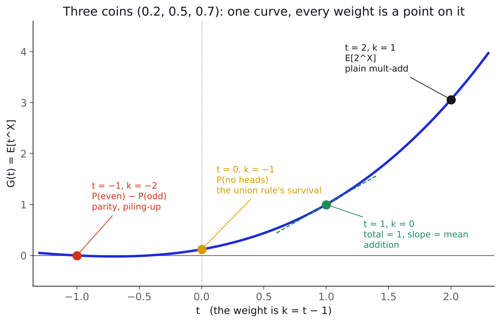
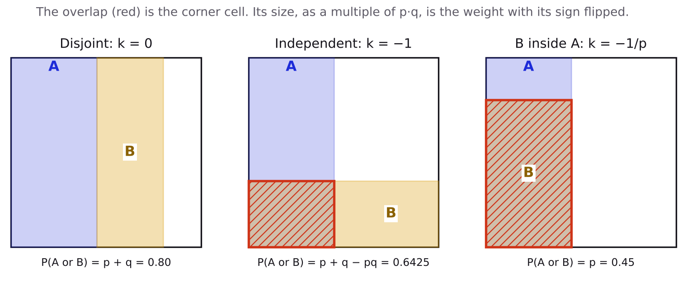
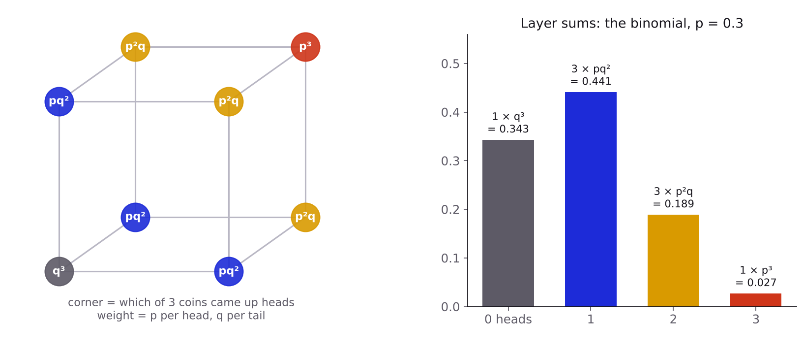
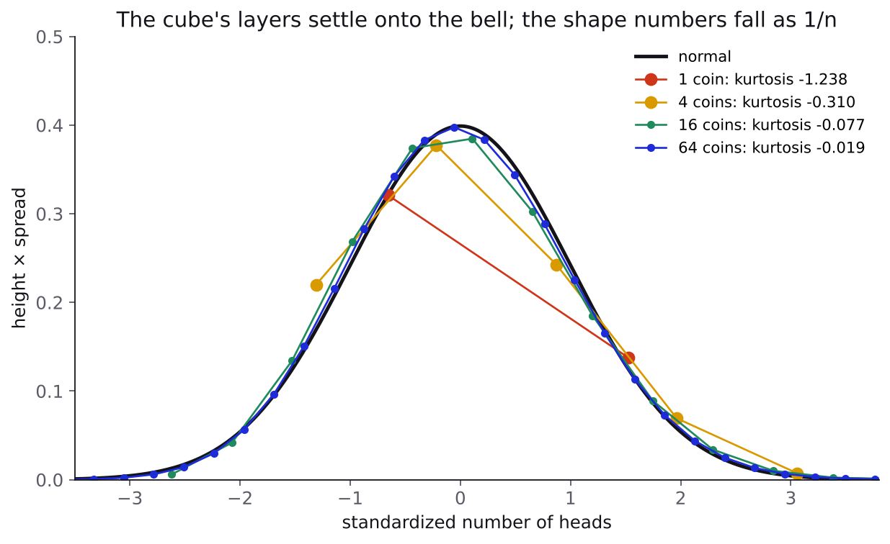
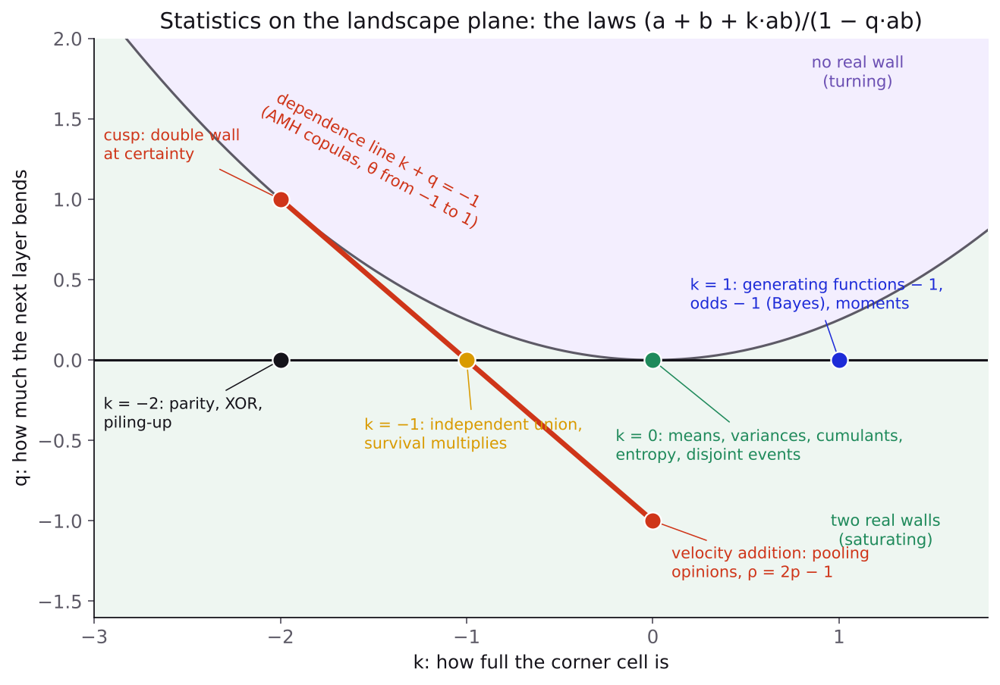

The weight k in a ⊕ₖ b = a + b + k·ab is the generating-function variable t minus one. Set t and you get a probability law: t = 0 is "none of them happen" (the union rule), t = −1 is parity, t = 1 is the mean. Dependence between events is the weight too, and the normal curve is mult-add's own exponential.

Known or new. Every law on this page is known, most of it classical: generating functions (de Moivre, Laplace), cumulants (Thiele, 1889), inclusion–exclusion, Bayes' odds form (Good, Turing), the central limit theorem, the Ali–Mikhail–Haq copula (1978) and Hamacher's rational t-norms (1978). The aim was the same as the information-theory page: derive them in one fused language, and prove the exact parts in Lean.
The one placement that looks new: on the landscape plane, the laws that can serve as "A or B" are exactly one line, k + q = −1, the lens laws with a wall at certainty. Its valid stretch runs from velocity addition through independence to the cusp, touching the border there. It's a tidy fact, not a soliton-sized lead: it rests on known copula theory. Details in The dependence line.
Write an event as its indicator, 1 if it happens and 0 if not. On those numbers the corner cell a·b is "and", weight −1 is "or" (a + b − ab), weight −2 is "exactly one" (a + b − 2ab), and weight 0 is the count. The squared difference of two indicators is their XOR. The complement x ↦ 1 − x turns "or" into "and": that's De Morgan, and it's the same flip the information-theory page used for survival.
Fold weight −1 over n events and associativity hands you inclusion–exclusion: every corner of the n-cube, with sign (−1) to the number of events in it. Lean proves this for any list, and then, through linearity of expectation, for events that aren't independent at all.
Dependence is the weight. For any two events, P(A or B) = p ⊕ₖ q with k = −lift, where lift = P(A and B)/(pq) is how full the overlap is against independence. Disjoint events give k = 0, plain addition, which is Kolmogorov's axiom. Independent events give k = −1. B inside A gives k = −1/p. The weight always lies between −1/max(p, q) and 0 (that range comes from the Fréchet bounds on the overlap).

For a count X, the generating function G(t) = E[tX] multiplies when you add independent counts. So define the k-moment a of X by 1 + k·a = G(1 + k). Then the k-moment of X + Y is a ⊕ₖ b. That's the mult-add lift, read on a random variable.
1 + k·aX+Y = (1 + k·aX)(1 + k·aY)
A Poisson count has k-moment (ekλ − 1)/k, which is mult-add's exponential E(x) = eˣ − 1 at kλ, scaled. Poissons add because E turns + into ⊕. A binomial with n coins of chance λ/n climbs to it (checked numerically).

Add coins one at a time and the chance of j heads obeys Pascal's rule with weights: P(n+1, j+1) = q·P(n, j+1) + p·P(n, j). Lean proves that this is C(n, j)·pʲ·qⁿ⁻ʲ, using the library's own cube layers. The k-moment of n equal coins climbs the cube: 1 + k·a = (1 + kp)ⁿ, which is rung 2, the mult-add power p⊕ₖ n.
The mean np and variance np(1 − p) then fall out of additivity alone, with no sums to evaluate.
Raw moments of a sum follow Pascal's rows: m₂ = a₂ + 2a₁b₁ + b₂, m₃ = a₃ + 3a₂b₁ + 3a₁b₂ + b₃, and the 1·4·6·4·1 row for m₄. Lean proves all four from the distribution itself. In series form this says the moment generating function multiplies, so M − 1 mult-adds.
Cumulants are the additive coordinates. Take mult-add's logarithm, log(1 + x), of that series and the coefficients are the cumulants κ₁ (mean), κ₂ (variance), κ₃, κ₄. They add for independent variables: Lean proves κ₂, κ₃ and κ₄ additive from the moment rows, and the check script confirms the log series gives exactly those formulas. So moments live at rung 1 and cumulants at rung 0, the same split as Tsallis and Rényi entropy.
A small tie back to parity: a coin's variance p(1 − p) is half its self-parity, ½·(p ⊕₋₂ p), the chance two copies disagree, halved. For any variable, variance is half the expected squared gap between two copies, and for indicators that squared gap is XOR.
Cumulant r scales like cʳ when you stretch the variable by c, and adds across copies. So for a sum of n copies the two shape numbers fall exactly as 1/n: skewness²(Sₙ) = skewness²(X)/n and excess kurtosis(Sₙ) = kurtosis(X)/n. Lean proves both, exactly. Only the mean and variance survive, and the law with only those two is the normal.
In mult-add terms the standardized moment function is (1 + s²/2n + …)ⁿ, an n-fold mult-add climb, and it tends to es²/2. That's the same limit as the e page, (1 + 1/n)ⁿ → e. The normal's M − 1 is E(μs + σ²s²/2), mult-add's exponential of a quadratic, and normals add because E(x + y) = E(x) ⊕ E(y). Poisson is E of a straight line; normal is E of a parabola. In general the infinitely divisible laws are exactly the E-images of an additive exponent, which is the Lévy–Khintchine theorem in this language.
The limit itself needs real numbers, so it's checked numerically: the distance from a p = 0.3 coin sum to the normal falls like 1/√n, halving each time n grows fourfold, from 0.018 at n = 10 to 0.001 at n = 2560 (with the usual half-step correction).

The information-theory page already proves Shannon additivity (k = 0), Tsallis' pseudo-additivity (k = 1 − q) and the Rényi link, so this page reuses them. Two statistics ties are checked numerically here: at fixed variance the normal has the most entropy (1.419 nats against 1.347 for Laplace and 1.242 for uniform), and the binomial's entropy approaches the normal's ½·log(2πe·npq). The Clayton copula's generator is Tsallis' q-logarithm, so the same weight dial also runs through dependence modelling.
The find. An "or" law must let certainty swallow everything: a ⊙ 1 = 1. On the landscape plane's lens laws (a + b + k·ab)/(1 − q·ab), that happens exactly when k + q = −1. Lean proves the "exactly". Equivalently 1 + kx + qx² = (1 − x)(1 − θx): one wall pinned at 1.
These are precisely the unions you get when "neither happens" follows the Ali–Mikhail–Haq copula with dependence θ, at k = −(1 + θ), q = θ (proved in Lean). The copula is valid for θ from −1 to 1 (checked on a grid), so the real stretch of the line runs from velocity addition at θ = −1, through independence at θ = 0, to the cusp at θ = 1, where the line touches the parabola: a double wall at certainty.
Known: the AMH copula (1978) is part of Hamacher's family, which Hamacher (1978) showed are the only t-norms that are rational functions. New, as far as I found: reading them as one line on the landscape map that touches the border at the cusp. It ties pooling opinions (Bayes) and the union rule to the same segment. It isn't as deep as the solitons, because the underlying facts were already in the copula literature.

| Law | Point (k, q) | Rung | Status |
|---|---|---|---|
| Disjoint events add (Kolmogorov) | (0, 0) | 0 | proved |
| Independent union, survival multiplies | (−1, 0) | 1 | proved |
| Dependent union | (−lift, 0) | 1 | proved |
| Inclusion–exclusion, n events | (−1, 0), folded | 1 | proved |
| Parity, XOR, piling-up | (−2, 0) | 1 | proved |
| Generating functions multiply | (1, 0) on G − 1; (k, 0) on the k-moment | 1 | proved |
| Binomial = Pascal layers; n coins | climb on (k, 0) | 2 | proved |
| Moments of a sum (rows to 1·4·6·4·1) | (1, 0) on M − 1 | 1 | proved |
| Mean, variance, κ₃, κ₄ add | (0, 0) | 0 | proved |
| CLT: shape numbers fall as 1/n | (0, 0) after scaling | 2 | proved |
| CLT limit, normal = E(quadratic) | limit of the climb | 2 → E | numeric |
| Poisson k-moment = E(kλ)/k | limit of the climb | 2 → E | numeric |
| Bayes odds; repeated evidence | (1, 0) on odds − 1 | 1; 2 | proved |
| Pooling opinions | (0, −1) | lens | proved |
| Log-odds add | (0, 0) | 0 | numeric |
| AMH dependence | k + q = −1, θ ∈ [−1, 1] | lens | proved identity; validity numeric |
| Shannon entropy adds | (0, 0) | 0 | proved on the information page |
lean/Statistics.lean: 98 theorems, core Lean 4.37.0-rc1, no mathlib, no sorry. A check run confirms every theorem uses only Lean's three standard axioms (list in lean/theorems.tsv). It imports the shared library's Base, Cube and Topics/E, so it can be added as FusedAlgebra/Topics/Statistics.lean as is.
Not in Lean, because core Lean has no real numbers or limits: logs, ex, the normal density, the CLT limit, Poisson, maximum entropy, and that AMH is a valid copula. Those are in checks.py (81 checks, output in checks_output.txt).
Files in the project folder, math-theory/statistics/: index.html, lean/Statistics.lean, lean/CheckStatistics.lean, lean/theorems.tsv, checks.py, checks_output.txt, figures.py, figures/. Builds on the information-theory page and the landscape page.